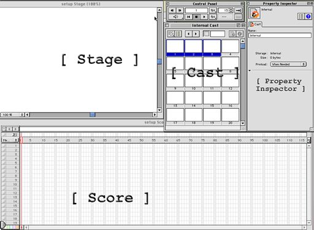

The Lingo Club at Eastmont Computing Center
Director is a rich tool with tons of features and many windows. It's easy to get lost in all the windows in Director, to avoid alot of clutter use the following window layout:

The layout assumes you have at least a 1024x768 size display.
The Stage Window is where your movie (animation, game or what ever) is dislayed. Set the stage size to 512x342 using the Menu Modify->Movie->Properties or Cmd-Shift-D, which displays Movie settings pane in the Property Inspector Window.
The Cast Window holds all the element make up your movie - art work, sounds, scripts and other stuff. The "Cast View Style" button switches between a list view and an icon view. Use the icon view for now.
The Property Inspector Window displays information about the current selection.
The Score Window shows sprites, the animated elements in your movie. Time is represented as a grid of frames. Time goes forward as you go from left to right.
This layout helps you see how elements interact.
When you create a piece of art work in Director's Paint Window, for example,
an icon for it will appear in the Cast Window. The elements in the Cast
Window are called Cast Members. which makes sense since they perform
on the Stage Window. When you drag a Cast Member from onto the
Stage Window it will appear on the Stage and in the Score Window.
The Cast Member is represented in the Score a long bar called
a Sprite.
Here's how a single Cast Member appear as three slightly different Sprites in the Score.
The three horizontal bars in the Score are called Sprites. All
three sprites are based on the Cast Member in slot 1 in the Cast Window.
The Property Inspector's Sprite pane is used to adjust the Ink to "Matte"
and Background Color (the color chip next to the Paint Bucket) of the three
Sprites.
The length of the Sprite tell you how long the it will appear on the stage. In this example each sprite appears on frame 1 and stays on Stage until frame 28. The Sprite shows the placement of the Cast Member in time. You can click and drag Sprites in the Score to control when it will appear. You can also Copy and Paste Sprites in the Score.
Clicking and dragging on a Sprite on the Stage will change where it appears on the Stage. Clicking and Dragging a Sprite in the Score will change when it appears.